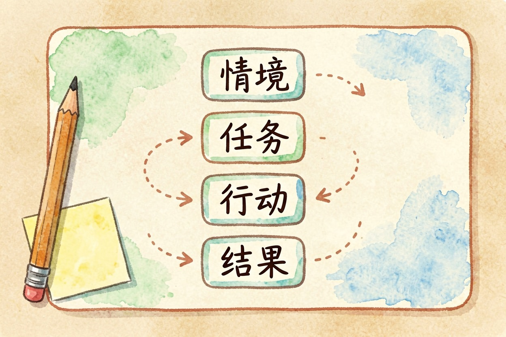
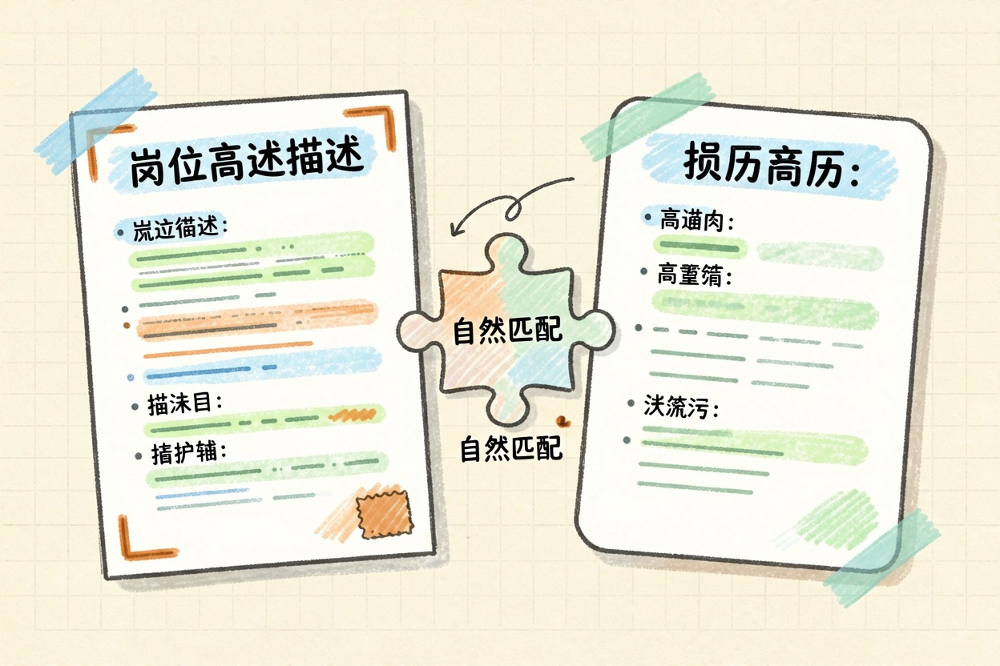
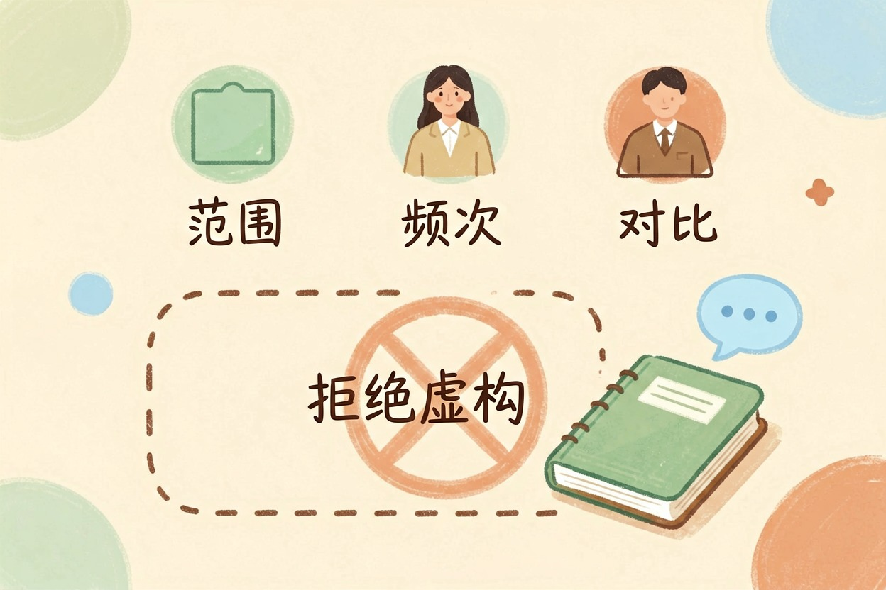

用 AI 优化简历：从流水账到写出成果的三步
简历投了很多没回音，不是因为经历不够，而是只记录了职责没写出成果，这是最关键的问题。
AI 优化简历：先找到没回音的真正原因
用 AI 优化简历，先要找到没回音的真正原因：往往不是经历不够，而是只写了「做过什么」，没写「做成了什么」。「负责日常运营」「参与项目开发」「协助团队完成」，这些是流水账，HR 看完留不下任何印象。改成「把运营数据提升了 30%」「独自交付了三个模块」「在两周内完成了竞品调研报告」，同样的事，换了说法，印象完全不同。AI 在这件事上的价值，是帮你把散落在脑子里的经历，组织成 HR 看得懂的成果句式。
流水账 vs 有结果，差距不在经历，在表达方式。
第一步：让 AI 把流水账改成 STAR 结构

STAR 结构——情境、任务、行动、结果——是简历改写的标准框架。把每条经历按这个结构重新组织，HR 一眼就能看到你的贡献。直接用下面这段提示词：
下面是我简历上的一条经历，请改写成 STAR 结构（情境-任务-行动-结果）。
原文：【粘贴一条】
补充信息：这件事的背景是【…】，我具体负责【…】，最后的结果是【…】。
要求：控制在两行以内；突出我的个人贡献而不是团队的；
不要添加我没有提供的任何信息或数字。第二步：按岗位 JD 做关键词对齐

同一个岗位，不同公司 JD 的关键词差别很大。把 JD 里的关键词自然融进你的简历，既能过 ATS 筛选系统，也能让 HR 一眼看出匹配度。注意是「自然融入」，不是原样堆关键词，堆出来的简历一眼假。用下面这段提示词：
这是目标岗位的 JD：【粘贴】
这是我的简历片段：【粘贴】
请指出：1) JD 里出现但我简历中缺失的关键能力词；
2) 我已有的哪些经历其实对应这些能力、只是没写出来；
3) 建议怎么改写措辞。不要替我编造经历。第三步：量化——没有数字怎么办

不是所有岗位都有 KPI 和可量化的数据。没有数字，用三种替代量化法。范围——「覆盖了 200 多家客户」「涉及全国三个区域的市场」。频次——「每周处理 50 条客诉」「每月出一份行业分析报告」。对比——「比上一季度降低了 30% 的投诉率」「从零搭建了这套流程」。有数字比没数字好，但最差的是全是形容词、一个数字没有。实在没有量化口径，就用「负责了某项目从 0 到 1 的全流程」这种有边界的描述，也比一句「负责项目」强。
简历之后：自我介绍与面试
简历改完只是第一步，下一步是自我介绍和面试准备。再花同样时间准备自我介绍和面试话术，把纸面上的亮点变成能说出来的内容——一页纸改好了，面谈时说不出来，等于白改。用同样的素材准备一两分钟的自我介绍，再模拟面试把关键经历练熟，改简历的效果才能落地。
用 AI 优化简历，核心是让 AI 帮你把经历说清楚，不是替你编经历。改完简历，用同样的素材准备面试，效果才能落地。
最后说一句反的：绝对不要让 AI 编造没做过的事，面试一追问细节就穿帮，代价远大于收益。 上面两个提示词里都已写入「不要编造」约束。另外，简历含身份证号、电话、住址等个人信息，贴给 AI 之前先脱敏。投递时把简历文件名改成「姓名-岗位-城市」的格式，HR 下载后一眼能认出是谁。
工具价格与免费额度可能变动，实际以各工具官网当前说明为准。用 AI 优化简历，核心是让 AI 帮你把经历说清楚，不是替你编经历。 !尾图核心要点回顾
{kind=link}
本文信息核对于 2026-08-05。AI 产品的价格、免费额度与功能变动频繁，实际以各工具官网当前说明为准。